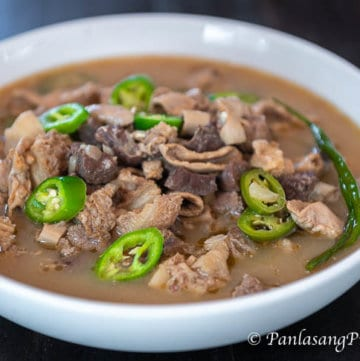

Papaitan

DESCRIPTION
Papaitan is a famous Ilocano soup dish mostly composed of cow or goat innards. The name of this dish was derived from the Filipino word Pait, which means Bitter. The bitter taste of this soup comes from the bile. This is a bitter juice extracted by the liver and stored in the gallbladder to aid digestion.
Ingredients:
- Beef heart
- Beef small intestine
- Beef tripe
- Beef liver
- Beef kidney
- Beef meat
- Onion
- Garlic
- Ginger
- Kalamansi
- Sinigang mix
- Vinegar
- Fish sauce
- Salt and Pepper
- Soy sauce (optional)
- Siling haba (optional) for the Sipa!
- Beef bile for the Pait!
Steps:
- Clean innards and meat by running water while massaging the innards and meat.
- Put all the innards in to the pressure cooker.
- Add Vinegar and Fish sauce.
- Leave the innards and meat on high fire for at least 30 minutes inside the pressure cooker. (If the innards and meat are not yet soft enough, feel free to extend your timer.)
- After boiling, remove it from the pressure cooker and wait it to cool down until the temperature is manageable for your own hand. (Note: Do not throw the broth as this will serve as the soup of your Papaitan!)
- Once the innards and meat has cooled down, chop these into your desired shape.
- After chopping, put the chopped innards and the meat back in to the broth.
- Slice your Onion, Garlic, Ginger, Kalamansi (squeeze them, you only need the juice!) and add these inside the broth.
- Wait for it to boil, add Beef bile (but not too much! Add little by little only until the desired bitterness).
- In contrast to the bitterness, add Sinigang mix.
- Wait for it to boil. Keep adding either Beef bile or Sinigang mix depending on your taste!
- Once you are satisfied with the sourness and bitterness, it's time to add some Pepper for spice, Salt or Fish sauce for saltiness, and Soy sauce for extra color.
- Once you are satisfied with the overall taste, add the Siling haba and you're done!